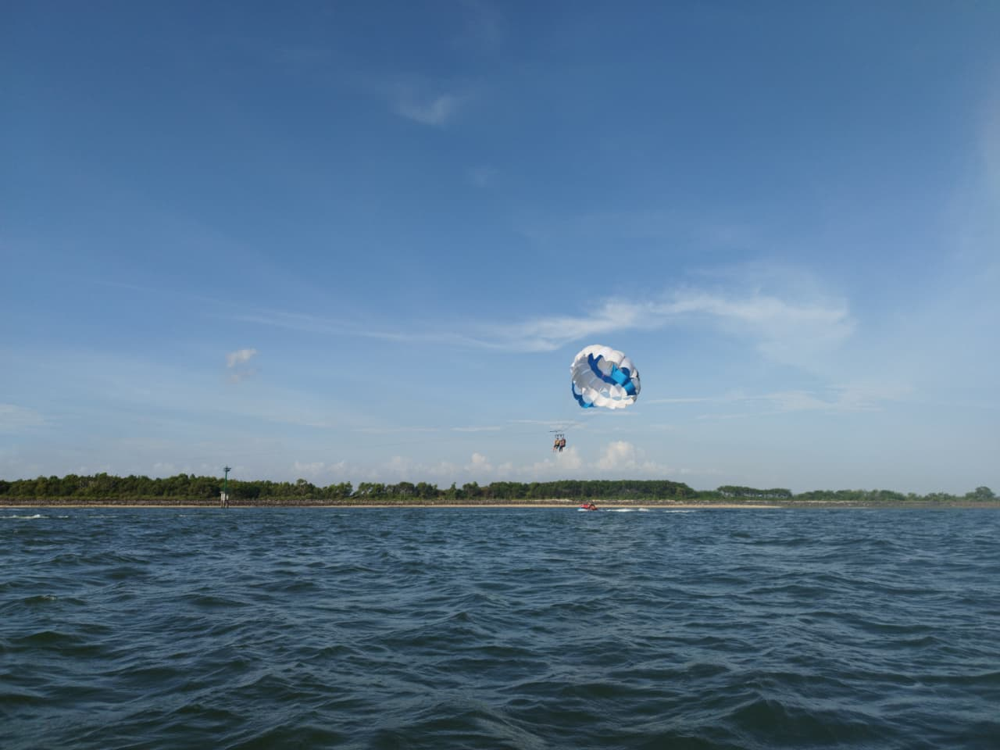
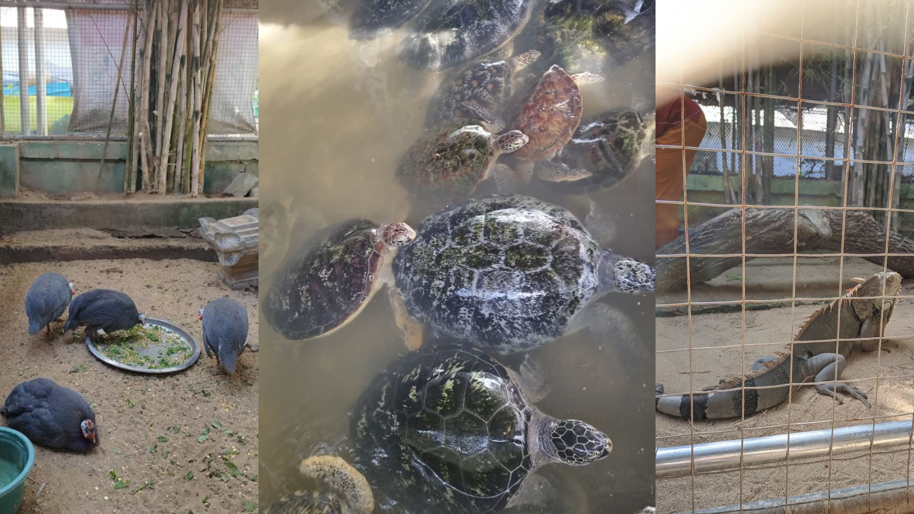
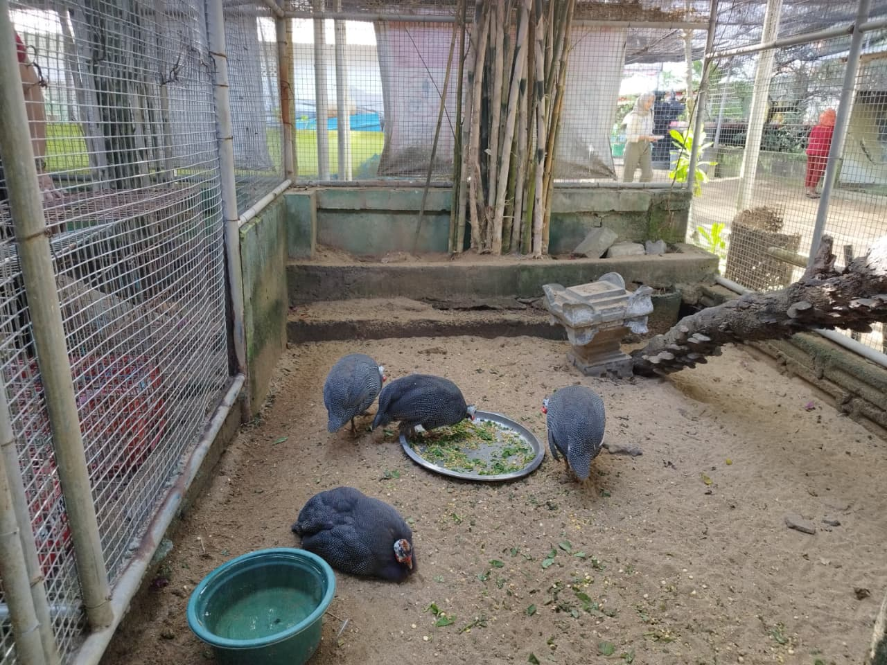
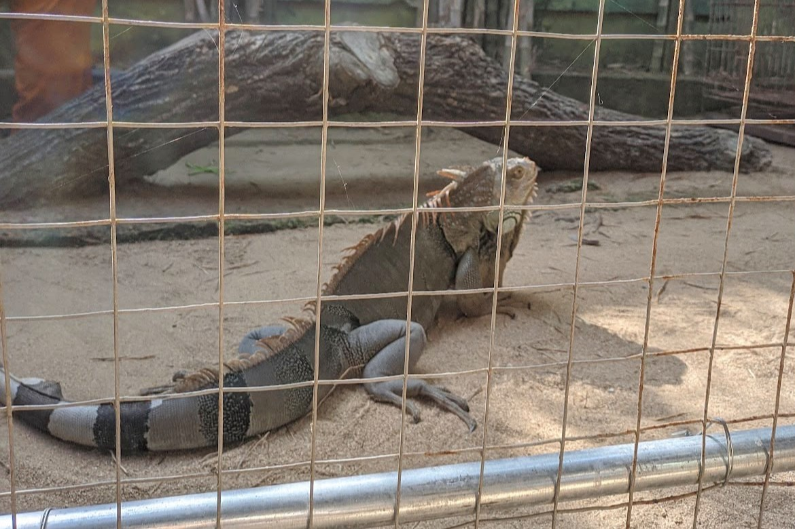
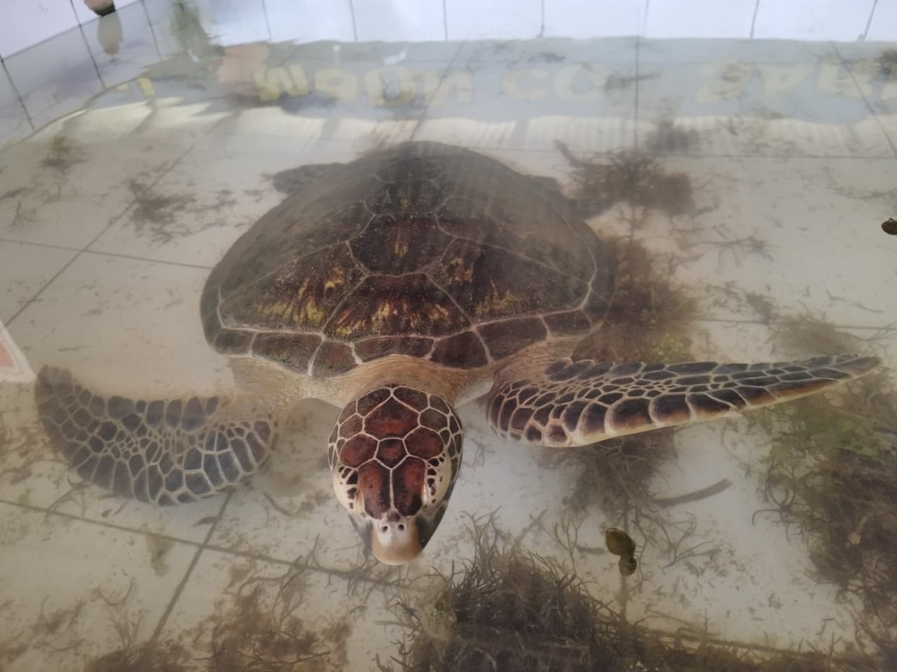
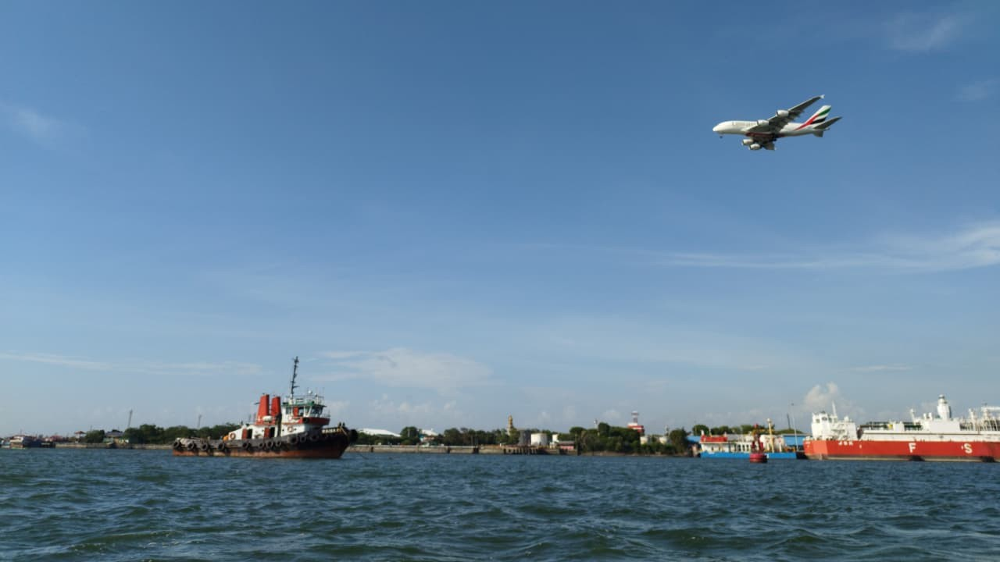
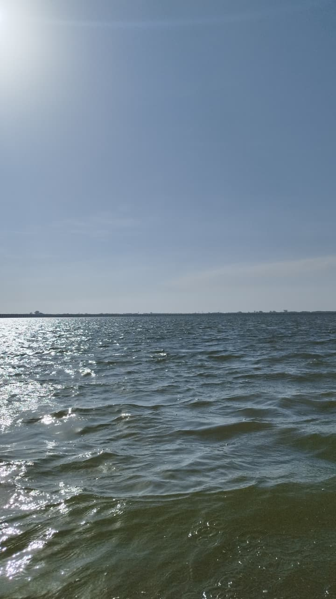
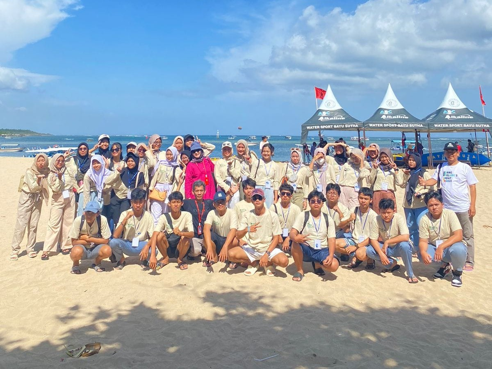
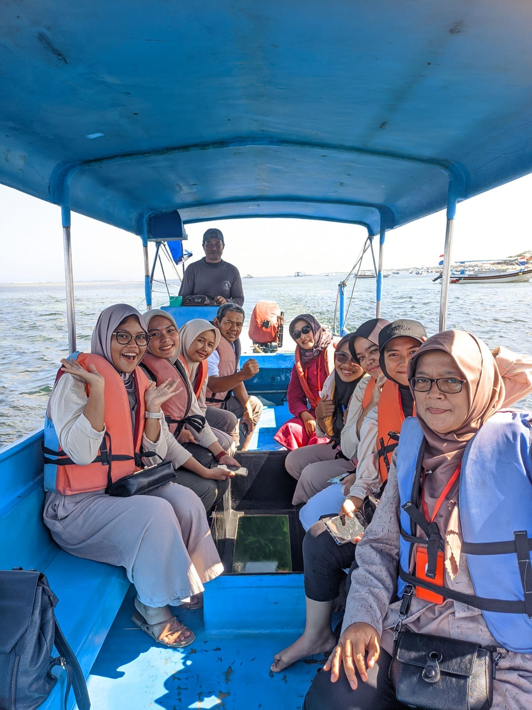
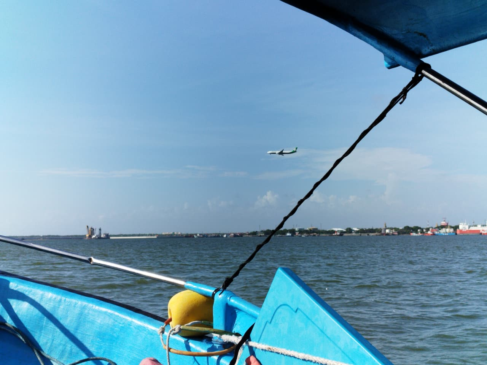

PILIHAN PERJALANAN
Paket Wisata
Pilih paket wisata yang sesuai dengan pengalaman liburan yang kamu inginkan.

Fun Watersport
Paket untuk menikmati berbagai aktivitas watersport di kawasan Tanjung Benoa.

Explore Pulau Penyu
Menjelajahi Pulau Penyu dan mengenal lebih dekat berbagai satwa yang ada di sana.
VIDEO PERJALANAN
Lihat Keseruan di Tanjung Benoa
Saksikan video perjalanan dan lihat berbagai aktivitas menarik yang dapat dilakukan di Tanjung Benoa.
PHOTO GALLERY
Galeri Perjalanan
Dokumentasi perjalanan wisata di Tanjung Benoa.








